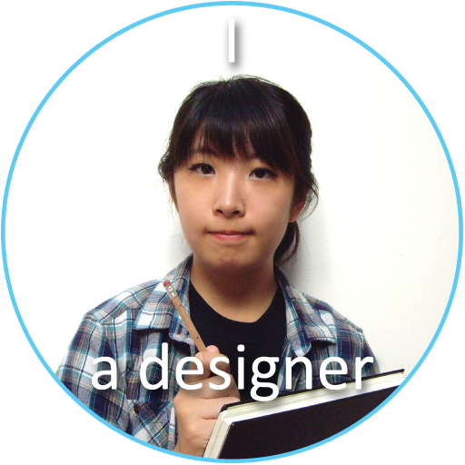
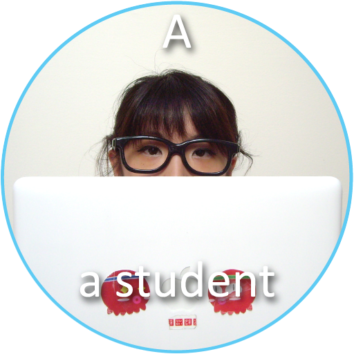

I’m a design student who crafts sparkly products for people to experience.
As an individual located in Vancouver BC, enrolled in the Interactive Arts and Technology (SIAT) program at Simon Fraser University, I have acquired various knowledge in design to understand core issues found within the sub-fields. As a result, one common concern that I have realize is that ergonomics are equally important for a physical and digital product. Hence, I aim to create memorable friendship that can be cherished between the user and the element they are interacting with. So click here to check out some of my works!
My interests involve a large range of things from creating hands-on crafts to visual graphics, photography, playing music and helping out in my community. In terms of craft making, it has offered me 3D visualization skills to produce objects based on 2D images into something physical that can be held. As for visual graphics, I often play with softwares available to produce the best result, which I am capable of learning on my own to obtain competency in technical skills. I am also musically talented where I need to listen closely to my accompanist in a duet and surrounding band members in an orchestra, similarly to communication on a team is essential in delivering an enjoyable piece for the audience. At last, with a handful of abilities developed, I am eager to offer my share in the community, such that I am currently a media staff for AniRevo, which is an annual anime convention in Vancouver, where I help plan and document decisive moments at events through photography and cinematography.
No worries, I don’t bite, instead, I love to meet new people by adding some icing to one’s life. So let’s be friends through one of the tools and start an adventurous journey!